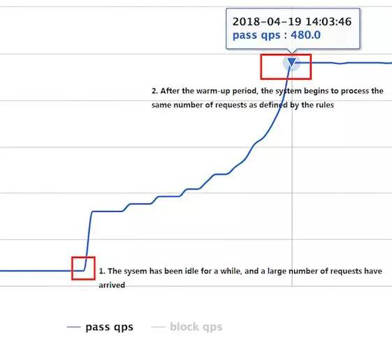
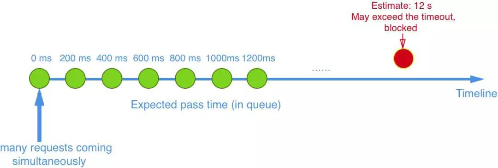
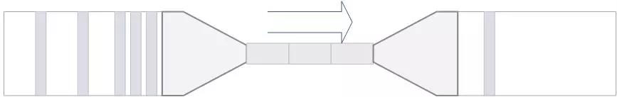

如何做技术选型？Sentinel 还是 Hystrix？
Sentinel 是阿里中间件团队研发的面向分布式服务架构的轻量级高可用流量控制组件，于 2018 年 7 月正式开源。Sentinel 主要以流量为切入点，从流量控制、熔断降级、系统负载保护等多个维度来帮助用户提升服务的稳定性。大家可能会问：Sentinel 和之前经常用到的熔断降级库 Netflix Hystrix 有什么异同呢？本文将从资源模型和执行模型、隔离设计、熔断降级、实时指标统计设计等角度将 Sentinel 和 Hystrix 进行对比，希望在面临技术选型的时候，对各位开发者能有所帮助。
Sentinel 项目地址：https://github.com/alibaba/Sentinel
总体说明
先来看一下 Hystrix 的官方介绍：
Hystrix is a library that helps you control the interactions between these distributed services by adding latency tolerance and fault tolerance logic. Hystrix does this by isolating points of access between the services, stopping cascading failures across them, and providing fallback options, all of which improve your system’s overall resiliency.
可以看到 Hystrix 的关注点在于以隔离和熔断为主的容错机制，超时或被熔断的调用将会快速失败，并可以提供 fallback 机制。
而 Sentinel 的侧重点在于：
- 多样化的流量控制
- 熔断降级
- 系统负载保护
实时监控和控制台
两者解决的问题还是有比较大的不同的，下面我们来具体对比一下。
共同特性
1. 资源模型和执行模型上的对比
Hystrix 的资源模型设计上采用了命令模式，将对外部资源的调用和 fallback 逻辑封装成一个命令对象 HystrixCommand 或 HystrixObservableCommand，其底层的执行是基于 RxJava 实现的。每个 Command 创建时都要指定 commandKey 和 groupKey（用于区分资源）以及对应的隔离策略（线程池隔离 or 信号量隔离）。线程池隔离模式下需要配置线程池对应的参数（线程池名称、容量、排队超时等），然后 Command 就会在指定的线程池按照指定的容错策略执行；信号量隔离模式下需要配置最大并发数，执行 Command 时 Hystrix 就会限制其并发调用。
Sentinel 的设计则更为简单。相比 Hystrix Command 强依赖隔离规则，Sentinel 的资源定义与规则配置的耦合度更低。Hystrix 的 Command 强依赖于隔离规则配置的原因是隔离规则会直接影响 Command 的执行。在执行的时候 Hystrix 会解析 Command 的隔离规则来创建 RxJava Scheduler 并在其上调度执行，若是线程池模式则 Scheduler 底层的线程池为配置的线程池，若是信号量模式则简单包装成当前线程执行的 Scheduler。
而 Sentinel 则不一样，开发的时候只需要考虑这个方法/代码是否需要保护，置于用什么来保护，可以任何时候动态实时的区修改。
从 0.1.1 版本开始，Sentinel 还支持基于注解的资源定义方式，可以通过注解参数指定异常处理函数和 fallback 函数。Sentinel 提供多样化的规则配置方式。除了直接通过 loadRules API 将规则注册到内存态之外，用户还可以注册各种外部数据源来提供动态的规则。用户可以根据系统当前的实时情况去动态地变更规则配置，数据源会将变更推送至 Sentinel 并即时生效。
2. 隔离设计上的对比
隔离是 Hystrix 的核心功能之一。Hystrix 提供两种隔离策略：线程池隔离 Bulkhead Pattern 和信号量隔离，其中最推荐也是最常用的是线程池隔离。Hystrix 的线程池隔离针对不同的资源分别创建不同的线程池，不同服务调用都发生在不同的线程池中，在线程池排队、超时等阻塞情况时可以快速失败，并可以提供 fallback 机制。线程池隔离的好处是隔离度比较高，可以针对某个资源的线程池去进行处理而不影响其它资源，但是代价就是线程上下文切换的 overhead 比较大，特别是对低延时的调用有比较大的影响。
但是，实际情况下，线程池隔离并没有带来非常多的好处。最直接的影响，就是会让机器资源碎片化。考虑这样一个常见的场景，在 Tomcat 之类的 Servlet 容器使用 Hystrix，本身 Tomcat 自身的线程数目就非常多了（可能到几十或一百多），如果加上 Hystrix 为各个资源创建的线程池，总共线程数目会非常多（几百个线程），这样上下文切换会有非常大的损耗。另外，线程池模式比较彻底的隔离性使得 Hystrix 可以针对不同资源线程池的排队、超时情况分别进行处理，但这其实是超时熔断和流量控制要解决的问题，如果组件具备了超时熔断和流量控制的能力，线程池隔离就显得没有那么必要了。
Hystrix 的信号量隔离限制对某个资源调用的并发数。这样的隔离非常轻量级，仅限制对某个资源调用的并发数，而不是显式地去创建线程池，所以 overhead 比较小，但是效果不错。但缺点是无法对慢调用自动进行降级，只能等待客户端自己超时，因此仍然可能会出现级联阻塞的情况。
Sentinel 可以通过并发线程数模式的流量控制来提供信号量隔离的功能。并且结合基于响应时间的熔断降级模式，可以在不稳定资源的平均响应时间比较高的时候自动降级，防止过多的慢调用占满并发数，影响整个系统。
3. 熔断降级的对比
Sentinel 和 Hystrix 的熔断降级功能本质上都是基于熔断器模式 Circuit Breaker Pattern。Sentinel 与 Hystrix 都支持基于失败比率（异常比率）的熔断降级，在调用达到一定量级并且失败比率达到设定的阈值时自动进行熔断，此时所有对该资源的调用都会被 block，直到过了指定的时间窗口后才启发性地恢复。上面提到过，Sentinel 还支持基于平均响应时间的熔断降级，可以在服务响应时间持续飙高的时候自动熔断，拒绝掉更多的请求，直到一段时间后才恢复。这样可以防止调用非常慢造成级联阻塞的情况。
4. 实时指标统计实现的对比
Hystrix 和 Sentinel 的实时指标数据统计实现都是基于滑动窗口的。Hystrix 1.5 之前的版本是通过环形数组实现的滑动窗口，通过锁配合 CAS 的操作对每个桶的统计信息进行更新。Hystrix 1.5 开始对实时指标统计的实现进行了重构，将指标统计数据结构抽象成了响应式流（reactive stream）的形式，方便消费者去利用指标信息。同时底层改造成了基于 RxJava 的事件驱动模式，在服务调用成功/失败/超时的时候发布相应的事件，通过一系列的变换和聚合最终得到实时的指标统计数据流，可以被熔断器或 Dashboard 消费。
Sentinel 目前抽象出了 Metric 指标统计接口，底层可以有不同的实现，目前默认的实现是基于 LeapArray 的滑动窗口，后续根据需要可能会引入 reactive stream 等实现。
Sentinel 特性
除了之前提到的两者的共同特性之外，Sentinel 还提供以下的特色功能：
- 轻量级、高性能
Sentinel 作为一个功能完备的高可用流量管控组件，其核心 sentinel-core 没有任何多余依赖，打包后只有不到 200KB，非常轻量级。开发者可以放心地引入 sentinel-core 而不需担心依赖问题。同时，Sentinel 提供了多种扩展点，用户可以很方便地根据需求去进行扩展，并且无缝地切合到 Sentinel 中。
引入 Sentinel 带来的性能损耗非常小。只有在业务单机量级超过 25W QPS 的时候才会有一些显著的影响（5% - 10% 左右），单机 QPS 不太大的时候损耗几乎可以忽略不计。
- 流量控制
Sentinel 可以针对不同的调用关系，以不同的运行指标（如 QPS、并发调用数、系统负载等）为基准，对资源调用进行流量控制，将随机的请求调整成合适的形状。
Sentinel 支持多样化的流量整形策略，在 QPS 过高的时候可以自动将流量调整成合适的形状。常用的有：
- 直接拒绝模式：即超出的请求直接拒绝。
- 慢启动预热模式：当流量激增的时候，控制流量通过的速率，让通过的流量缓慢增加，在一定时间内逐渐增加到阈值上限，给冷系统一个预热的时间，避免冷系统被压垮。 
- 匀速器模式：利用 Leaky Bucket 算法实现的匀速模式，严格控制了请求通过的时间间隔，同时堆积的请求将会排队，超过超时时长的请求直接被拒绝。Sentinel 还支持基于调用关系的限流，包括基于调用方限流、基于调用链入口限流、关联流量限流等，依托于 Sentinel 强大的调用链路统计信息，可以提供精准的不同维度的限流。 
目前 Sentinel 对异步调用链路的支持还不是很好，后续版本会着重改善支持异步调用。
- 系统负载保护
Sentinel 对系统的维度提供保护，负载保护算法借鉴了 TCP BBR 的思想。当系统负载较高的时候，如果仍持续让请求进入，可能会导致系统崩溃，无法响应。在集群环境下，网络负载均衡会把本应这台机器承载的流量转发到其它的机器上去。如果这个时候其它的机器也处在一个边缘状态的时候，这个增加的流量就会导致这台机器也崩溃，最后导致整个集群不可用。针对这个情况，Sentinel 提供了对应的保护机制，让系统的入口流量和系统的负载达到一个平衡，保证系统在能力范围之内处理最多的请求。

- 实时监控和控制面板
Sentinel 提供 HTTP API 用于获取实时的监控信息，如调用链路统计信息、簇点信息、规则信息等。如果用户正在使用 Spring Boot/Spring Cloud 并使用了Sentinel Spring Cloud Starter，还可以方便地通过其暴露的 Actuator Endpoint 来获取运行时的一些信息，如动态规则等。未来 Sentinel 还会支持标准化的指标监控 API，可以方便地整合各种监控系统和可视化系统，如 Prometheus、Grafana 等。
Sentinel 控制台（Dashboard）提供了机器发现、配置规则、查看实时监控、查看调用链路信息等功能，使得用户可以非常方便地去查看监控和进行配置。

- 生态
Sentinel 目前已经针对 Servlet、Dubbo、Spring Boot/Spring Cloud、gRPC 等进行了适配，用户只需引入相应依赖并进行简单配置即可非常方便地享受 Sentinel 的高可用流量防护能力。未来 Sentinel 还会对更多常用框架进行适配，并且会为 Service Mesh 提供集群流量防护的能力。
总结
| # | Sentinel | Hystrix |
|---|---|---|
| 隔离策略 | 信号量隔离 | 线程池隔离/信号量隔离 |
| 熔断降级策略 | 基于响应时间或失败比率 | 基于失败比率 |
| 实时指标实现 | 滑动窗口 | 滑动窗口（基于 RxJava） |
| 规则配置 | 支持多种数据源 | 支持多种数据源 |
| 扩展性 | 多个扩展点 | 插件的形式 |
| 基于注解的支持 | 支持 | 支持 |
| 限流 | 基于 QPS，支持基于调用关系的限流 | 不支持 |
| 流量整形 | 支持慢启动、匀速器模式 | 不支持 |
| 系统负载保护 | 支持 | 不支持 |
| 控制台 | 开箱即用，可配置规则、查看秒级监控、机器发现等 | 不完善 |
| 常见框架的适配 | Servlet、Spring Cloud、Dubbo、gRPC | Servlet、Spring Cloud Netflix |